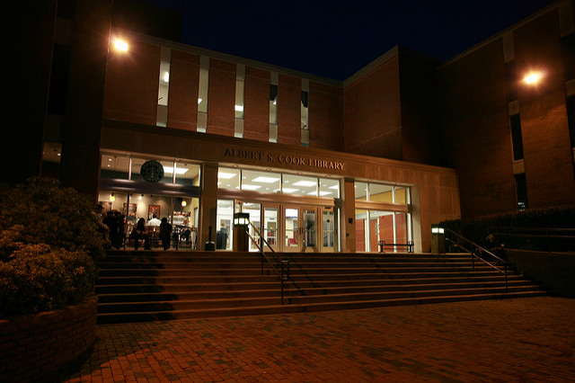

Proxy Builder
Make your links to TU e-resources work from anywhere off campus.

1. Enter link to the library resource.
2. Copy new link into your assignment, syllabus, or email.
3. (Recommended) Test the link from an off campus network.
Make your links to TU e-resources work from anywhere off campus.
1. Enter link to the library resource.
2. Copy new link into your assignment, syllabus, or email.
3. (Recommended) Test the link from an off campus network.